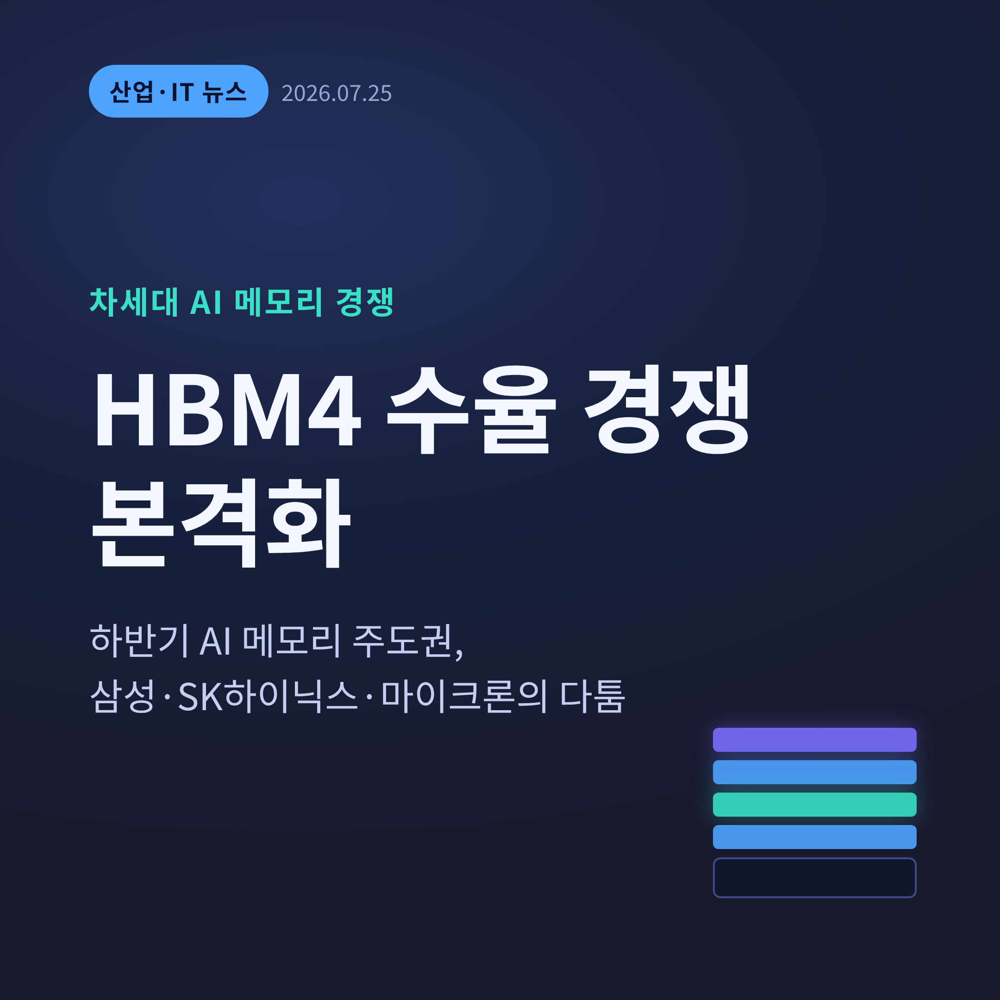
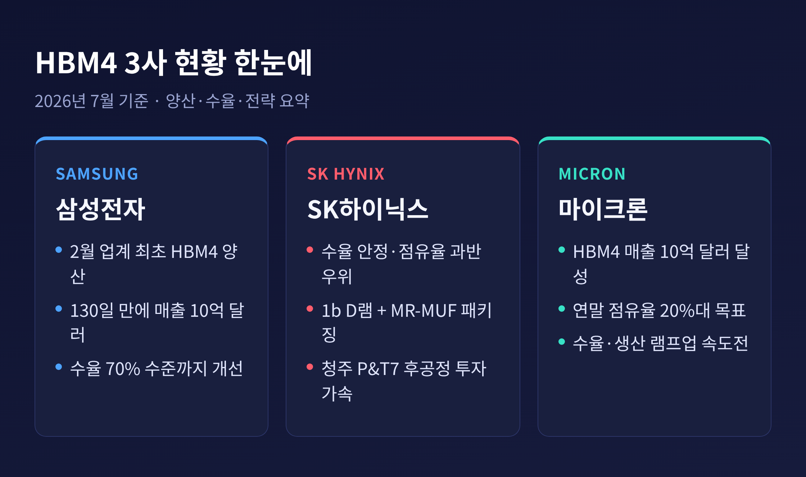
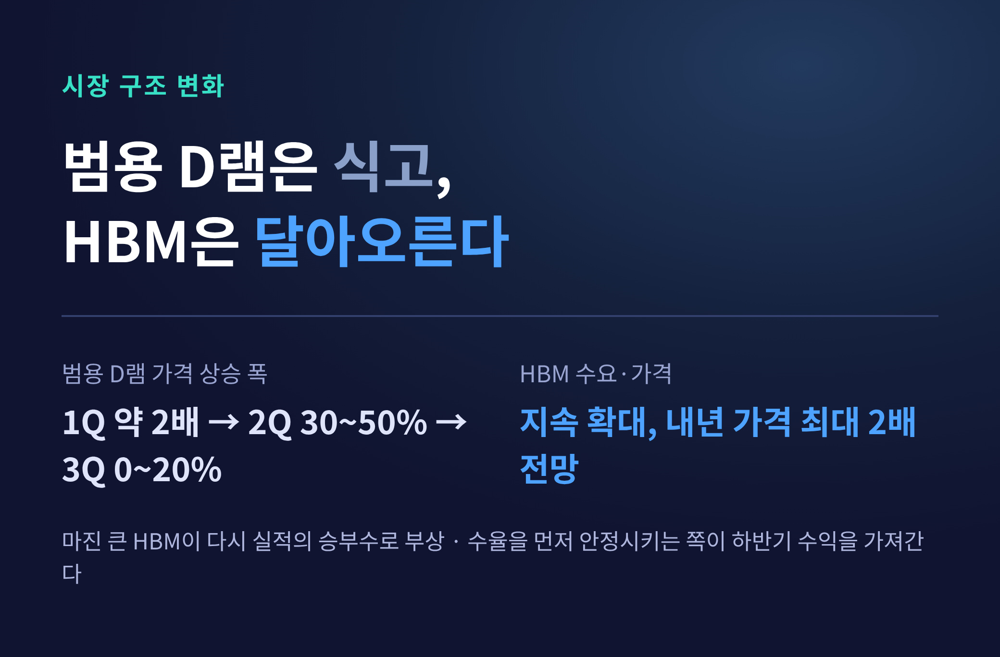
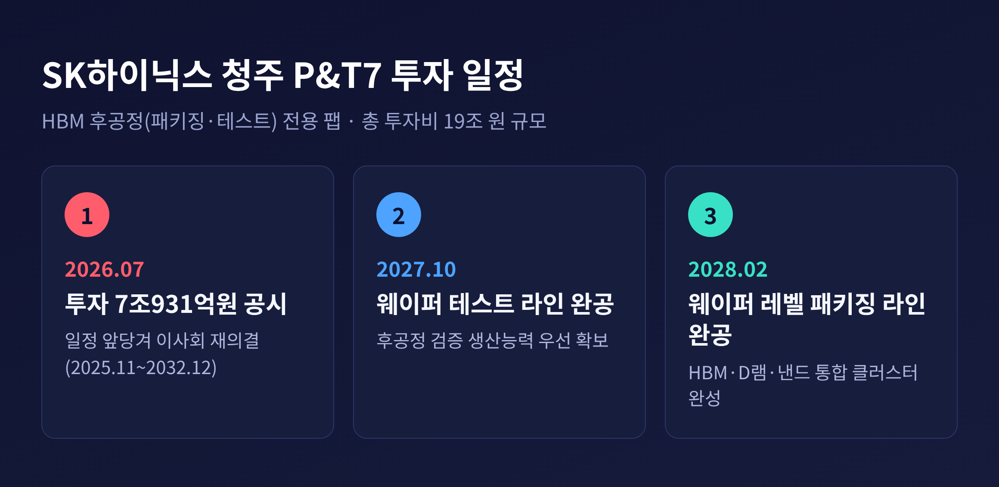
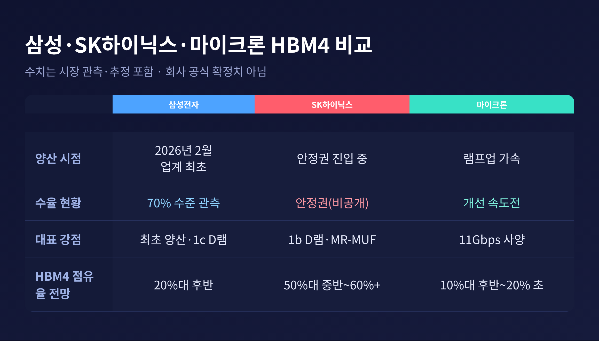
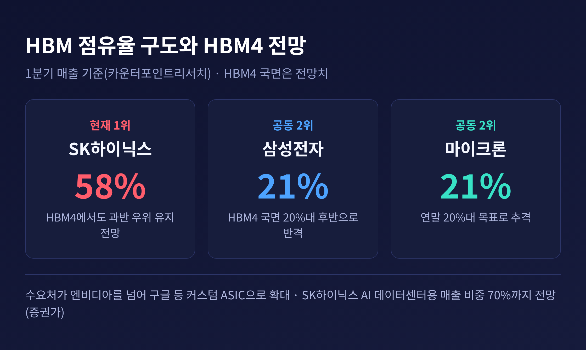

HBM4 수율 경쟁, 하반기 AI 메모리 주도권 판가름한다

이번 글에서는 차세대 메모리 'HBM4'를 둘러싼 삼성전자·SK하이닉스·마이크론의 수율 경쟁을 정리해 보겠습니다. 2026년 7월 넷째 주 현재 진행 중인 양산 시점, 수율, 투자 규모를 근거 자료에 기반해 살펴봅니다.
- 하반기 HBM 시장이 HBM3E에서 HBM4로 재편되며 3사의 수율 경쟁이 본격화됐습니다.
- SK하이닉스는 7월 22일 청주 P&T7 후공정 팹에 7조931억원 투자를 공시하며 투자를 앞당겼습니다.
- 수율을 먼저 안정시키는 쪽이 하반기 수익을 가져갑니다. 지금은 SK하이닉스가 과반 우위입니다.
■ 무슨 일이 벌어지고 있나
글로벌 메모리 3사가 HBM4 수율 경쟁에 나란히 뛰어들었습니다. HBM4는 6세대 고대역폭메모리입니다. 하반기 출시되는 엔비디아 AI 가속기 '베라 루빈'에 실립니다.
수율은 전체 생산한 반도체 가운데 정상 작동하는 제품의 비율입니다. 수율이 오를수록 팔 수 있는 물량이 늘고, 그만큼 수익도 커집니다. HBM은 여러 D램을 쌓아 만들기 때문에 결함 없이 높은 수율을 내기가 특히 까다롭습니다.
전자신문 보도에 따르면, 삼성전자·SK하이닉스·마이크론은 지금 HBM4 수율을 끌어올리는 데 총력을 기울이고 있습니다. 하반기 세 회사의 수익을 가를 승부처가 바로 이 수율이라는 뜻입니다.

■ 왜 지금 수율이 승부처인가
배경에는 수익 구조의 변화가 있습니다. 그동안 실적을 이끈 것은 범용 D램이었습니다. 지금은 사정이 달라졌습니다.
범용 D램 가격은 1분기에 전 분기 대비 두 배 가까이 뛰었습니다. 그러나 상승 폭이 빠르게 줄고 있습니다. 2분기 30~50%, 3분기는 0~20% 수준으로 관측됩니다.
한동안은 범용 D램 공급이 빠듯해 마진이 역전되는 기현상까지 있었습니다. 서버·PC·모바일용 범용 D램을 팔 때 오히려 이문이 더 남는 상황이었습니다.
반면 HBM은 수요가 계속 늘어 가격 상승이 이어질 전망입니다. 마진이 큰 HBM이 다시 실적의 승부수로 떠오른 셈입니다. 예전엔 범용 D램이 곳간을 채웠다면, 지금은 HBM이 그 자리를 되찾고 있습니다.
여기에 공급이 빠듯합니다. 엔비디아 '베라 루빈' 출시를 앞두고 수요가 몰리는데, 생산에는 병목이 있습니다. 대형 AI 고객사들은 3~5년짜리 장기공급계약으로 물량을 미리 잡고 있습니다. 그 결과 메모리 3사의 가격 협상력은 한층 세졌습니다. HBM4 가격이 내년에 두 배로 오른다는 전망까지 나옵니다.

■ 삼성전자 — 가장 먼저 양산, 수율로 반격
삼성전자는 올해 2월 업계에서 가장 먼저 HBM4 양산과 출하를 시작했습니다. 이후 약 130일 만에 HBM4 매출 10억 달러를 달성한 것으로 전해집니다.
수율도 빠르게 올라왔습니다. 업계에서는 삼성전자가 HBM4 수율을 70% 수준까지 끌어올린 것으로 봅니다. 바탕이 된 것은 1c(10나노 6세대) D램입니다. 올 초 이미 양산 안정권인 80%를 넘겼습니다.
차세대 제품인 HBM4E 수율도 최근 70%를 넘어선 것으로 전해집니다. 삼성전자는 HBM 생산능력의 절반가량을 HBM4에 배정한 것으로 알려졌습니다. 승부수가 통한다면 내년에는 HBM 1위를 노려볼 수 있다는 관측도 나옵니다.
다만 조심스러운 시각도 있습니다. 삼성전자 HBM4 수율이 아직 SK하이닉스·마이크론에 못 미친다는 분석도 함께 존재합니다. 한쪽으로 단정하기에는 이른 국면입니다.
■ SK하이닉스 — 수율 안정과 청주 P&T7 투자 가속
SK하이닉스는 검증된 1b D램과 MR-MUF 패키징으로 양산 안정성을 앞세웁니다. HBM4는 전력효율을 40% 개선하고 데이터 전송속도를 10Gbps로 끌어올렸다고 밝혔습니다. HBM4 수율의 구체적 수치는 공개되지 않았지만, 안정권으로 들어서는 중이라는 관측입니다.
주목할 소식은 후공정 투자입니다. SK하이닉스는 7월 22일 공시를 통해 청주 P&T7 팹 건설에 7조931억원을 투자한다고 밝혔습니다. 투자 기간은 2025년 11월부터 2032년 말까지입니다.
이번 공시는 투자 일정이 앞당겨지며 이사회 결의 금액이 늘어 다시 의결한 것입니다. P&T7 총 투자비 19조 원 자체에는 변동이 없습니다.
P&T7은 패키징과 테스트를 맡는 후공정 전용 팹입니다. HBM은 D램을 여러 층 쌓고 첨단 패키징을 입혀야 합니다. 안정적인 후공정 능력이 곧 경쟁력인 이유입니다. 회사는 신규 장비 발주도 준비하며 공급 물량을 늘리려 하고 있습니다.

■ 마이크론 — 추격자의 속도전
마이크론도 만만치 않습니다. 최근 분기 실적에서 HBM4 매출 10억 달러 달성을 알렸습니다. 연말까지 HBM 시장 점유율을 20%대로 끌어올리겠다는 구상도 내놨습니다.
생산능력에서는 한국 두 회사에 아직 밀립니다. 그래서 수율 개선과 대량 생산 전환에 속도를 냅니다. 대규모 설비 투자도 이미 진행 중입니다. HBM4 샘플은 최대 11Gbps 속도로 내놓으며 사양 경쟁에서도 물러서지 않고 있습니다. 올해 HBM 생산능력은 사실상 완판된 것으로 알려져, 남은 변수는 결국 얼마나 빨리 물량을 늘리느냐입니다.
세 회사를 나란히 놓으면 강점이 뚜렷하게 갈립니다.

■ 점유율 구도와 앞으로의 전망
현재 판세는 SK하이닉스가 앞서 있습니다. 카운터포인트리서치 기준 1분기 HBM 매출 점유율은 SK하이닉스 58%, 삼성전자와 마이크론이 각각 21%입니다.
HBM4 국면 전망은 소스마다 수치가 조금씩 다릅니다. 대체로 SK하이닉스 50%대 중반에서 60% 이상, 삼성전자 20%대 후반, 마이크론 10%대 후반에서 20% 초반으로 모입니다. 수치는 갈려도 순위 구도는 대체로 일치합니다.
수요처도 넓어지고 있습니다. 엔비디아를 넘어 구글 등 커스텀 ASIC으로 확대되며 출하 증가에 속도가 붙을 전망입니다. SK하이닉스는 장기계약 비중이 늘며 AI 데이터센터용 매출 비중이 70%까지 커질 것이라는 증권가 분석도 나옵니다.
주의할 점도 있습니다. 수율과 점유율 수치는 회사가 공식 확정한 값이 아니라 시장 관측과 추정이 섞여 있습니다. 같은 HBM4를 두고도 삼성전자가 앞선다는 분석과 SK하이닉스가 앞선다는 분석이 함께 나옵니다. 그래서 특정 숫자 하나에 기대기보다, 흐름과 방향을 읽는 편이 안전합니다.

정리하면 이렇습니다. HBM4의 승패는 화려한 사양보다 수율이라는 기본기에서 갈립니다. 먼저 안정적인 수율에 도달한 쪽이 하반기 수익과 다음 세대의 주도권을 함께 가져갈 것입니다.
"결국 남는 것은, 결함 없이 쌓아 올리는 힘입니다."
지금은 SK하이닉스가 앞서 있지만, 삼성전자의 반격과 마이크론의 추격도 만만치 않습니다. 하반기 수율 곡선이 이 판을 어디로 끌고 갈지, 조용히 지켜볼 만합니다.
참고 출처
- 전자신문(2026-07-21), 「메모리 반도체 3사, 'HBM4 수율' 경쟁 점화」
- 한국경제(2026-07-22), 「SK하이닉스, 청주 P&T7 생산시설에 7조931억원 투자」
- 머니투데이(2026-07-02), 「'HBM4' 시장 커지고 가격 오른다…삼성·SK·마이크론 '점유율 전쟁'」
- 파이낸셜뉴스(2026-07-15), 「HBM4 승부수 통했다…삼성전자, 내년 HBM 1위 전망」
- 글로벌이코노믹·경향신문·SK하이닉스 뉴스룸·카운터포인트리서치 등